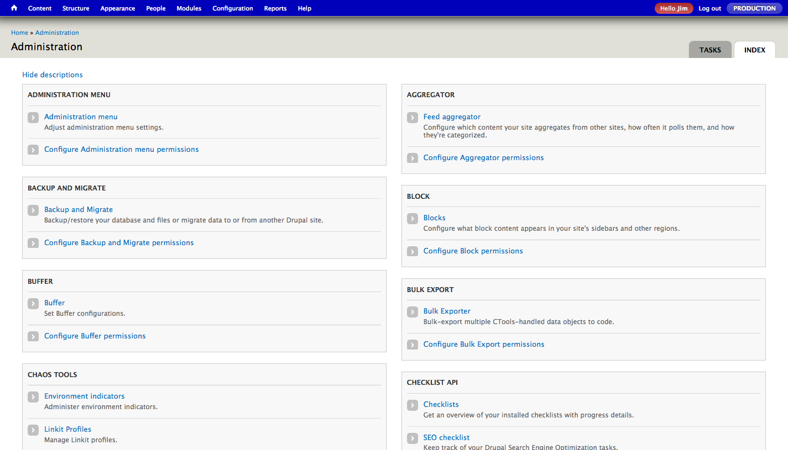
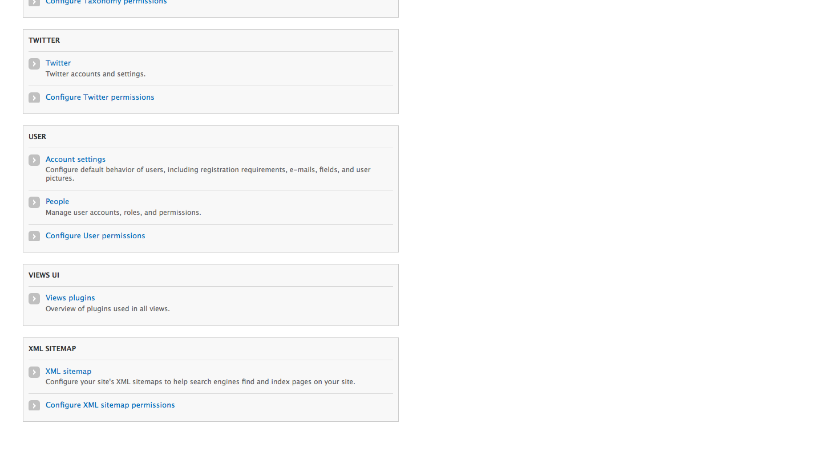
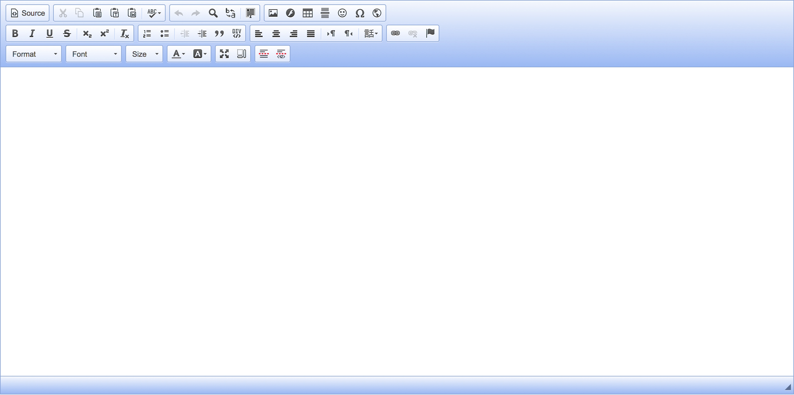
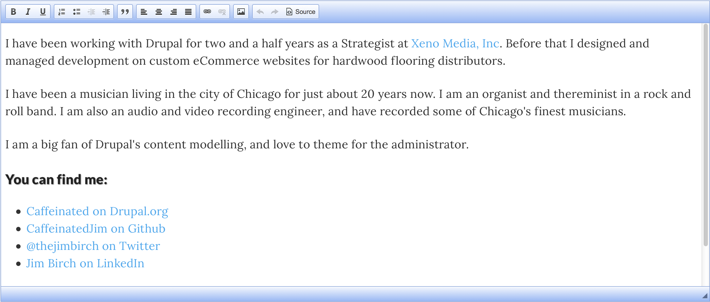
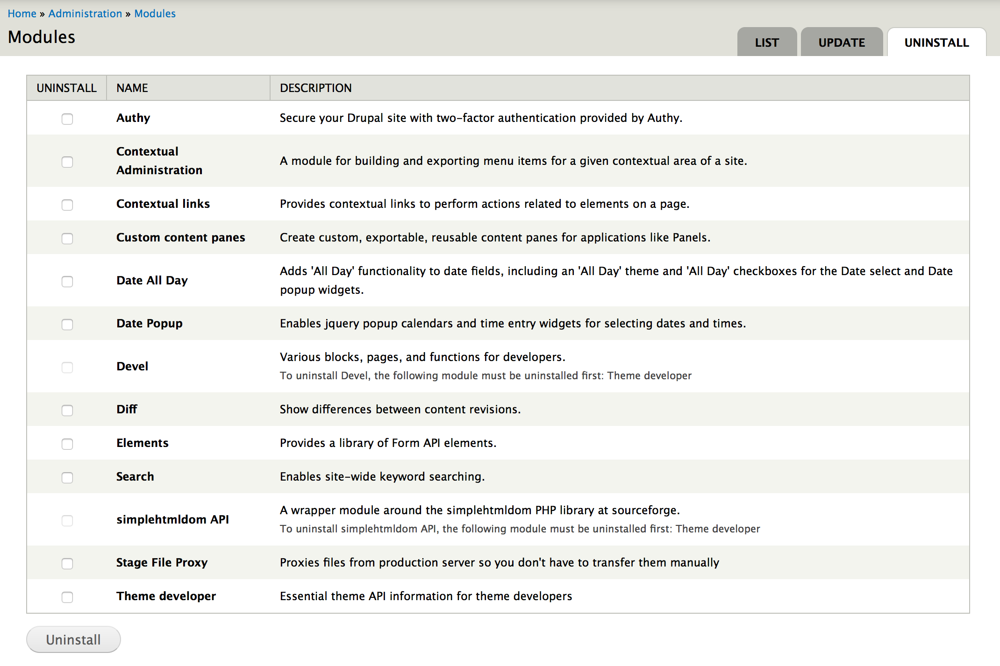
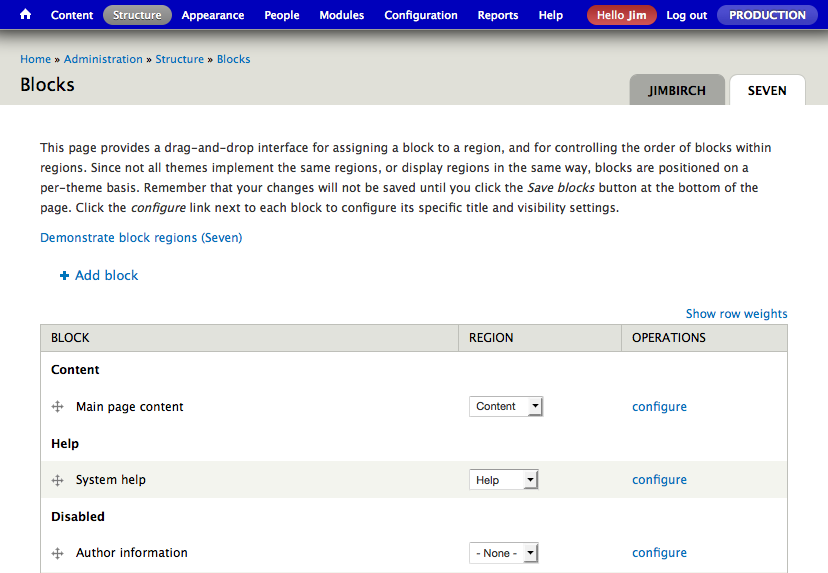

Admin Menu, Organized, but Still So Many Links!
Another view, listing them all on one page

and this is a pretty simple site!

Same goes for the ckEditor.
So many options...

But really, only a few things are truly needed.

Who are our
Content Creators?
Common Additional Roles:
- Webmasters
- Editors
- Authors
Content Specific Roles such as:
Task Specific Roles such as:
Once we know who, we can start fighting for them.
Before we begin, let's talk about installing/uninstalling modules.
Using Drush
- drush dl -y module_name
- drush en -y module_name
- drush dis -y module_name
- drush pm-uninstall -y module_name
In the UI
Turn off (disable)
Uninstall (removes database bits)
Delete module folder by hand/in git

Theming the Drupal Administration UI
Administration Theme Options
- Choose a separate admin theme
- Use your front end theme
- Develop your own admin theme
Block System Applies to Admin Themes Too!

Global changes
Enable Admin Toolbar, Disable Overlay
- drush en -y admin_menu admin_menu_toolbar
- drush dis -y toolbar shortcut
- drush dis -y overlay
Content Type & Taxonomy Defaults
- Title Label
- Explanation or submission guidelines (Help)
- Administrative Description
- Default Publishing State, Revisions
- Author, Menu, Sitemap, (other modules), etc
Field Defaults
- Help text
- Default text format
- Module Settings (Linkit, Fences)
- Number of values for the field
- Images: File Directory, Types, Alt, etc
Field Group Types
- Fieldsets
- Horizontal tabs
- Vertical tabs
- Accordions
- Divs (Good for Grid Systems)
- HTML elements
Lots of modules that extend.
Dashboard(s)
There are many different ways to create a landing page for the logged in administrator.
- Default "content" screen
- Dashboard module
- Workbench Dashboard
- Custom Made Admin View
My suggestion is to choose one way, and make it great.
Common Tasks
- Add only relevant buttons needed for the field
- Exclude security risks (filters)
- Remove markup already in templates like H1, and add formats (classes).
- Configure Allowed content so classes aren't stripped, set height, etc.
- CKEditor 4.3+ Widgets -- Widgitizing Widgets by bneil.
Uploading Images in the WYSIWYG
- What types of files can be uploaded?
- What thumbnails are created for admin use?
- Where can they be uploaded?
ckFinder
- Set Different upload folders per Content Type.
- Make a Profile Type and Text Format for each Content Type.
IMCE
- Set Different upload folders per User Role.
- Can do user/userid or year/month (like Wordpress)
Scheduler
- Each content type can be scheduled.
- Which need to be?
- Who can?
- Set up external Cron
Workbench
- Each content type can have more statuses than Published. Workbench Moderation adds Draft and Needs Review by default, but can add custom ones you create.
- Workbench Access can restrict access to different sections of the site based on menu or taxonomies.
- Workbench Media adds integration with either the 1.x or 2.x of the Media Module!
Inline
Content Types, Fields, Blocks, Views, Panels, etc all provide places to enter descriptive and instructional text for administrative users
Content Types and fields allow for HTML, (link to…)
Google Docs/Dropbox/Company Intranet
- Keep a master copy, organized folder, shared with those who will help you maintain.
- Export PDF for users, shared with appropriately role'd users
- Authors can access author docs
- Editors can access author and editor docs
- Webmasters can access author, editor, and webmaster docs
- and so on.
Testing and Tweaking
Things change up to the last minute before a launch, and many times after that! Do not get stuck in the habit of just using the developer's administrator role.
- Use the site early and often as the Webmaster, Editor, and Author.
- Step through the documentation defined tasks, verify all can be done.
- Adjust permissions as you go.
How to be another
- Masquerade Module
- Create different accounts
- Gmail Users can use the plus trick
- jim+webmaster@
- jim+editor@
- jim+author@